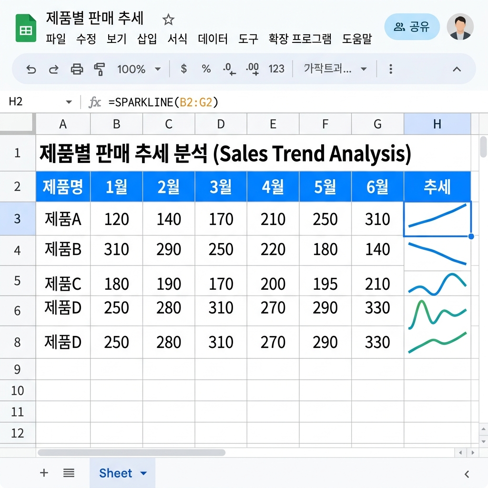
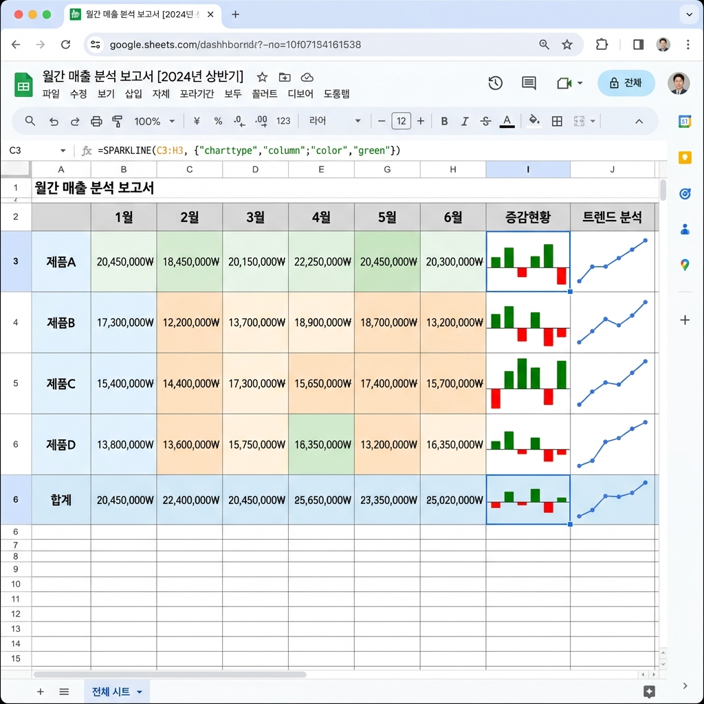
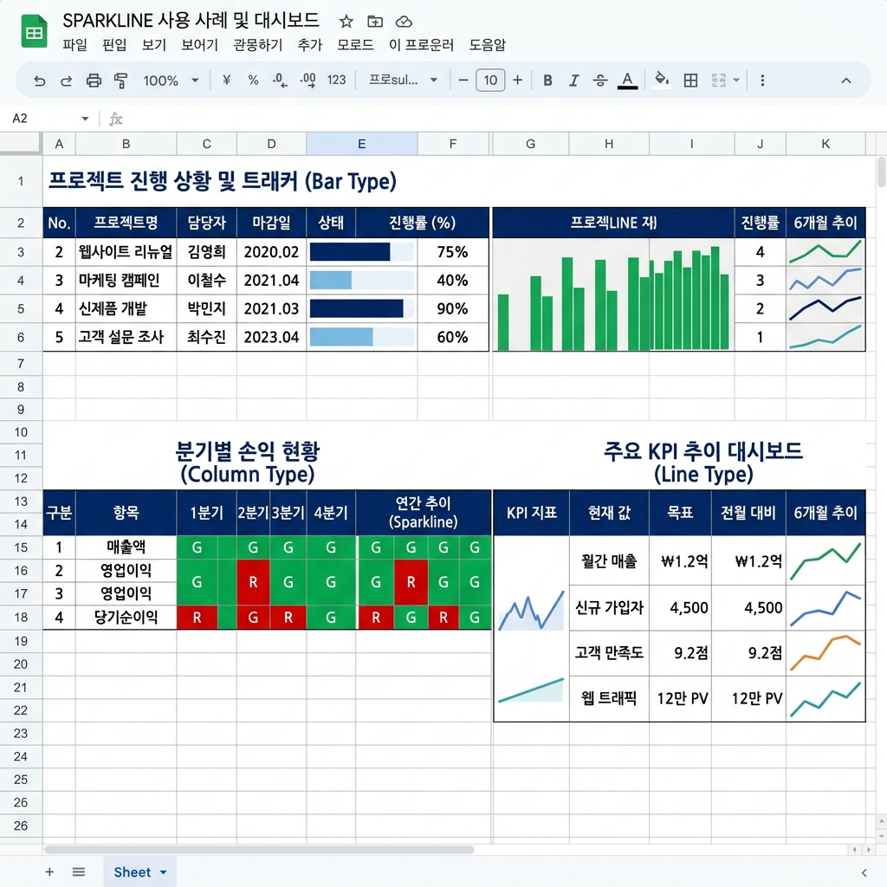

구글 스프레드시트 SPARKLINE 완벽 가이드 2026 — 셀 안에 미니 차트 그리는 마이크로 시각화 기술
데이터는 숫자만으로는 이야기를 전달하지 못합니다. 수십 개의 수치가 나열된 표를 보는 상대방이 한눈에 추세를 파악하게 하려면 시각화가 필요합니다. 그런데 매번 차트를 따로 삽입하기엔 시트가 복잡해지고 인쇄도 불편해집니다. 이 문제를 정확히 해결하는 함수가 바로 SPARKLINE입니다. 단 한 줄의 수식으로 셀 하나 안에 완전한 미니 차트를 그릴 수 있으며, 꺾은선 그래프·막대 그래프·원형 차트까지 자유자재로 선택할 수 있습니다. 보고서 테이블 자체에 시각 정보를 내장하는 '마이크로 시각화' 기술의 핵심이 바로 SPARKLINE입니다.
📊 SPARKLINE이란? — 기본 개념과 작동 원리
SPARKLINE은 구글 스프레드시트에서 셀 하나 안에 소형 차트(미니 차트)를 렌더링하는 함수입니다. Microsoft Excel에도 스파크라인 기능이 있지만, Google의 SPARKLINE은 함수 형태로 구현되어 있어 다른 수식과 조합이 가능하고, ARRAYFORMULA·FILTER·QUERY 등과 연계하면 더욱 강력한 자동화를 구현할 수 있습니다.
기본 문법은 단 두 가지 인수로 구성됩니다.
=SPARKLINE(데이터, [옵션])
첫 번째 인수 데이터는 차트로 그릴 숫자 배열 또는 범위입니다. 두 번째 인수 옵션은 선택 사항으로, 차트 유형·색상·최솟값·최댓값 등 시각 속성을 지정하는 2열 배열({속성명, 값} 쌍)입니다. 옵션을 생략하면 기본 꺾은선 그래프가 회색으로 표시됩니다.
SPARKLINE의 중요한 특성 중 하나는 셀의 크기에 따라 차트가 자동으로 리사이즈된다는 점입니다. 셀 높이와 너비를 늘리면 그 안의 스파크라인 차트도 함께 커지며, 반대로 작게 만들어도 비율에 맞게 줄어듭니다. 이 덕분에 행 높이를 적절히 설정해 두면 표 안에 매우 선명한 미니 차트를 내장할 수 있습니다.

SPARKLINE 함수로 구현한 추세 컬럼 예시 화면 / AI 제작 이미지
📈 차트 유형 4가지 — charttype 옵션 완전 정복
SPARKLINE의 핵심 옵션은 charttype입니다. 지원하는 4가지 차트 유형과 특징을 정리합니다.
① 꺾은선 그래프 (line) — 기본값
=SPARKLINE(B2:G2, {"charttype","line"; "color","#1565c0"; "linewidth",2})
기본 차트 유형으로, 시계열 데이터의 추세 변화를 표현하기에 가장 적합합니다. "color"로 선 색상을 지정하고, "linewidth"로 선 두께(1~5)를 조절합니다. 복수 계열 데이터를 넣으면 여러 개의 선이 그려집니다.
② 막대 그래프 (bar)
=SPARKLINE(B2:G2, {"charttype","bar"; "color1","#1565c0"; "color2","#e3f2fd"; "max",100})
각 항목의 상대적 크기 비교에 유리합니다. "color1"은 데이터 값의 막대 색상, "color2"는 나머지 영역(배경) 색상입니다. "max" 옵션으로 최댓값 기준을 고정할 수 있어, 여러 행의 스파크라인을 동일한 스케일로 비교할 때 유용합니다.
③ 세로 막대 그래프 (column)
=SPARKLINE(B2:G2, {"charttype","column"; "color","#00796b"; "negcolor","#e64a19"; "lowcolor","#ffcc02"})
양수/음수 값을 가진 데이터에서 특히 강력합니다. "negcolor"로 음수 값의 막대 색상을 별도 지정할 수 있어, 손익·증감률 데이터를 한눈에 구분하기 쉽습니다. "lowcolor"로 최솟값 막대의 색상을 강조할 수도 있습니다.
④ 원형 차트 (pie)
=SPARKLINE({30,50,20}, {"charttype","pie"; "color1","#1565c0"; "color2","#ef5350"; "color3","#43a047"})
두 개 이상의 값이 전체에서 차지하는 비율 분포를 표현합니다. 각 섹터 색상을 "color1", "color2", "color3" 등으로 순서대로 지정합니다. 단, 원형 차트는 데이터 계열이 많거나 값 차이가 작을 경우 가독성이 떨어질 수 있으므로, 3~5개 항목의 비율 비교에 가장 적합합니다.
🗂️ 옵션 파라미터 완전 레퍼런스
SPARKLINE 옵션은 {"옵션명", 값; "옵션명", 값; ...} 형태의 2열 배열로 전달합니다. 자주 사용하는 핵심 옵션을 정리합니다.
| 옵션명 | 적용 차트 | 설명 | 예시 값 |
|---|
| charttype | 전체 | 차트 유형 지정 | "line" / "bar" / "column" / "pie" |
| color | line, column | 메인 색상 | "#1565c0" / "blue" |
| color1~colorN | bar, pie | 각 섹터/구간 색상 | "#ef5350" |
| negcolor | column | 음수 값 막대 색상 | "#e64a19" |
| lowcolor | column | 최솟값 막대 색상 | "#ffcc02" |
| highcolor | column | 최댓값 막대 색상 | "#00796b" |
| firstcolor | column | 첫 번째 값 막대 색상 | "#7b1fa2" |
| lastcolor | column | 마지막 값 막대 색상 | "#f57f17" |
| linewidth | line | 선 두께 (1~5) | 2 |
| min | 전체 | Y축 최솟값 고정 | 0 |
| max | 전체 | Y축 최댓값 고정 | 100 |
| empty | line | 빈 셀 처리 방식 | "zero" / "ignore" |
| nan | line | 텍스트/오류 처리 | "convert" / "ignore" |
| rtl | 전체 | 오른쪽→왼쪽 방향 | TRUE / FALSE |
🛠️ 실무 활용 사례 1 — 월별 매출 추세 대시보드
다음은 제품별 월별 매출 데이터에 SPARKLINE을 적용해 추세 대시보드를 만드는 실무 예제입니다.
가상 데이터 구조:
| 제품명 | 1월 | 2월 | 3월 | 4월 | 5월 | 6월 | 추세(SPARKLINE) |
|---|
| 제품 A | 320 | 410 | 380 | 520 | 490 | 610 | ↗ (상승 추세) |
| 제품 B | 850 | 790 | 720 | 680 | 640 | 590 | ↘ (하강 추세) |
| 제품 C | 220 | 310 | 180 | 390 | 280 | 420 | ∿ (등락 반복) |
H2 셀에 입력할 SPARKLINE 수식:
=SPARKLINE(B2:G2, {"charttype","line"; "color","#1565c0"; "linewidth",2; "min",0})
이를 H2:H4 범위에 복사하면 각 행의 데이터에 맞는 미니 꺾은선 그래프가 자동으로 생성됩니다. "min",0 옵션을 추가하면 0 기준점이 고정되어 제품 간 상대적 수준 비교도 가능합니다.

SPARKLINE column형으로 구현한 증감 현황 대시보드 / AI 제작 이미지
🛠️ 실무 활용 사례 2 — 손익 증감률 시각화 (column형)
전월 대비 증감률처럼 양수와 음수가 혼재하는 데이터를 시각화할 때는 column 차트가 탁월합니다.
월별 증감률 데이터 (%):
| 월 | 1월 | 2월 | 3월 | 4월 | 5월 | 6월 |
|---|
| 증감률(%) | +5.2 | -3.1 | +8.7 | -1.4 | +12.3 | +4.8 |
=SPARKLINE(B2:G2, {
"charttype","column";
"color","#1565c0";
"negcolor","#e53935";
"highcolor","#00796b";
"lowcolor","#f57f17"
})
이 수식에서 양수 막대는 파란색(`#1565c0`), 음수 막대는 빨간색(`#e53935`)으로 자동 구분되며, 최댓값 막대는 초록색(`#00796b`), 최솟값 막대는 주황색(`#f57f17`)으로 강조됩니다. 데이터 흐름을 한눈에 파악하기에 매우 직관적인 시각화입니다.
🛠️ 실무 활용 사례 3 — 진행률 표시 bar형
목표 대비 달성률을 표현할 때는 bar 차트가 가장 효과적입니다.
프로젝트 진행률 데이터:
| 과제 | 진행률(%) | 잔여(%) | 시각화 |
|---|
| 과제 A | 72 | 28 | [████████░░] 72% |
| 과제 B | 45 | 55 | [████░░░░░░] 45% |
| 과제 C | 98 | 2 | [██████████] 98% |
=SPARKLINE({B2, 100-B2}, {
"charttype","bar";
"color1","#1565c0";
"color2","#e3f2fd";
"max",100
})
진행률(B2)과 잔여율(100-B2)을 인라인 배열로 전달하고, 최댓값을 100으로 고정하면 모든 행이 같은 스케일의 진행률 바가 됩니다. 이 방식은 프로젝트 현황 보고서, OKR 추적 시트, 예산 집행 현황표 등에 즉시 적용 가능한 실전 패턴입니다.
⚠️ 자주 발생하는 오류와 해결법
⚠️ SPARKLINE 사용 시 주의사항
1. 텍스트 셀이 범위에 포함된 경우
→ "nan","convert" 또는 "nan","ignore" 옵션 추가로 오류 방지
2. 빈 셀(공백)이 범위에 있는 경우
→ "empty","zero"(0으로 처리) 또는 "empty","ignore"(건너뜀) 선택
3. 음수 데이터에 bar 차트 사용 시
→ bar 타입은 음수를 지원하지 않으므로 column 타입으로 변경할 것
4. 데이터가 1개뿐인 경우
→ SPARKLINE은 최소 2개 이상의 데이터 포인트 필요 (#NUM! 오류 발생 가능)
5. 인쇄 시 스파크라인이 흐릿하게 출력될 때
→ 행 높이를 충분히 확보하고 페이지 인쇄 배율 100%로 고정
🔗 SPARKLINE과 다른 함수의 조합 — 실전 고급 패턴
SPARKLINE의 진가는 다른 함수와 조합할 때 더욱 빛납니다.
패턴 1 — FILTER + SPARKLINE: 조건부 데이터만 차트화
=SPARKLINE(FILTER(B2:G2, B2:G2>=300))
패턴 2 — IFERROR + SPARKLINE: 데이터 없을 때 빈 셀 처리
=IFERROR(SPARKLINE(B2:G2, {"charttype","column"})," ")
패턴 3 — SPARKLINE + 직접 배열: 최근 N개 데이터만 표시
=SPARKLINE(OFFSET(G2,0,-3,1,4))
패턴 4 — 다계열 꺾은선: 두 개 시계열 동시 비교
=SPARKLINE({B2:G2; B10:G10}, {"charttype","line"})
이처럼 SPARKLINE은 단순한 미니 차트 함수가 아니라, 다양한 함수와 결합하면 자동으로 업데이트되는 동적 인포그래픽 셀을 구현하는 강력한 도구입니다.

진행률·손익·KPI를 한 화면에 담은 SPARKLINE 대시보드 / AI 제작 이미지
📐 스파크라인 셀 최적 설계 — 행 높이·너비 가이드
SPARKLINE은 셀 크기에 자동으로 맞춰지므로, 시각적으로 명확한 차트를 만들려면 셀 크기 설정이 중요합니다.
권장 설정값:
꺾은선(line) 미니 차트: 행 높이 35~50px, 열 너비 80~120px 이상. 너무 좁으면 추세 변화를 읽기 어렵습니다.
세로 막대(column) 미니 차트: 행 높이 45~60px, 열 너비 80px 이상. 데이터 포인트 수가 많을수록 너비를 넓게 설정합니다.
진행률 바(bar) 차트: 행 높이 25~35px, 열 너비 100~150px 이상. 바 차트는 가로 방향이므로 너비가 충분해야 합니다.
실용적인 팁으로, 여러 행에 SPARKLINE을 사용할 때는 전체 행을 선택한 후 행 높이를 일괄 적용하면 일관된 시각적 통일감을 얻을 수 있습니다. Google 스프레드시트에서 행 번호를 Shift+클릭으로 복수 선택한 후 오른쪽 클릭 → '행 크기 조절'을 선택하면 됩니다.
✅ SPARKLINE 빠른 참고 치트시트
📋 SPARKLINE 한눈에 보기 — 핵심 수식 모음
기본 꺾은선: =SPARKLINE(B2:G2)
컬러 꺾은선: =SPARKLINE(B2:G2, {"charttype","line"; "color","#1565c0"; "linewidth",2})
진행률 바: =SPARKLINE({B2, 100-B2}, {"charttype","bar"; "color1","#1565c0"; "color2","#e3f2fd"; "max",100})
컬럼(양음수): =SPARKLINE(B2:G2, {"charttype","column"; "color","#1565c0"; "negcolor","#e53935"})
원형 차트: =SPARKLINE({A2,B2,C2}, {"charttype","pie"; "color1","#1565c0"; "color2","#43a047"; "color3","#ef5350"})
IFERROR 방어: =IFERROR(SPARKLINE(B2:G2)," ")
공백 처리: =SPARKLINE(B2:G2, {"nan","ignore"; "empty","zero"})
#구글스프레드시트
#SPARKLINE함수
#스파크라인
#미니차트
#데이터시각화
#구글시트함수
#스프레드시트실무
#엑셀대안
#마이크로시각화
#구글시트2026